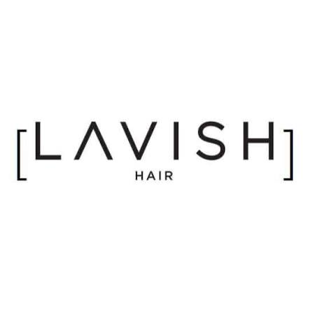
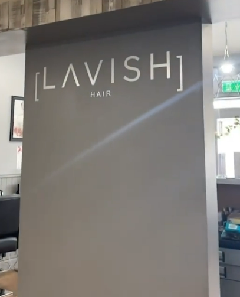

How can we help you today?
Digital Receptionist by poppadCut & Stylefrom €XX
Blow Dry / Stylingfrom €XX
Colourfrom €XX
Highlights / Foilsfrom €XX
Balayagefrom €XX
Treatmentsfrom €XX
Prices can vary depending on hair length, thickness and service required. Ruth or Lauren can confirm an exact price.
Please make yourself comfortable and let Ruth or Lauren know you've arrived when they're available.
Tea and coffee are available, and there is a customer toilet on site.
LAVISH stylist
Services and profile to be confirmed.LAVISH stylist
Services and profile to be confirmed.Have a preferred stylist? Mention Ruth or Lauren when arranging your appointment.
MondayClosed
Tuesday9am–6pm
Wednesday9am–6pm
Thursday9am–7pm
Friday9am–6pm
Saturday8:30am–5:30pm
SundayClosed
Yes. Customers can request Ruth or Lauren when arranging an appointment.
Please ask Ruth or Lauren. This will be confirmed before launch.
Please speak to Ruth or Lauren before a colour service. Exact guidance will be added before launch.
Please ask Ruth or Lauren. This will be confirmed before launch.
Please ask Ruth or Lauren. This will be confirmed before launch.
Please ask Ruth or Lauren. This will be confirmed before launch.
If you are more than 15 minutes late, LAVISH may not be able to provide the scheduled service. 15 minutes past the scheduled appointment time is considered a no-show and a deposit will be required for future appointments.
LAVISH requires a minimum of 48 hours' notice to cancel or reschedule. If 48 hours' notice is not given, a 50% deposit will be required to book future appointments.
A 50% deposit is required for appointments lasting 3+ hours, such as balayage, foiling and colour corrections. For these appointments, cancelling or rescheduling at least 72 hours beforehand allows the deposit to be refunded or transferred. Within 72 hours, the deposit is retained. Deposits can be taken over the phone or in person.
Street parking is available nearby.
Yes. Please ask Ruth or Lauren for access details.
Yes, there is a customer toilet on site.
Yes. Tea and coffee are offered to customers.
2 William Street
Townparks, Ardee
Co. Louth, A92 VF2W
Street parking is available nearby.
Wi-Fi available
Customer toilet
Tea & coffee offered
Street parking nearby
Wella Professional
Moroccanoil
NAK Hair Australia

A minimum of 48 hours' notice is required. If 48 hours' notice is not given, a 50% deposit will be required to book future appointments.
If you are more than 15 minutes late, LAVISH may not be able to provide the scheduled service. 15 minutes past the appointment time is considered a no-show and a deposit will be required for future appointments.
A 50% deposit is required for longer appointments such as balayage, foiling and colour corrections. Cancel or reschedule at least 72 hours before the appointment for the deposit to be refunded or transferred. Within 72 hours, the deposit is retained.
Deposits can be taken over the phone or in person at the salon.